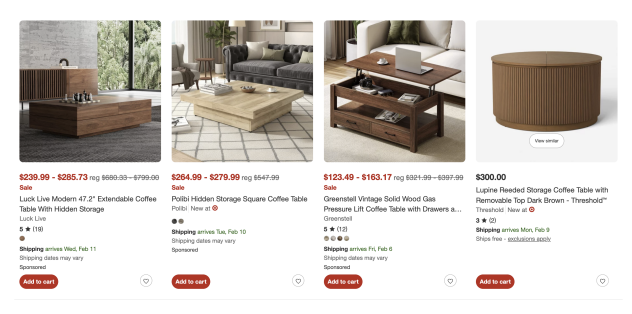
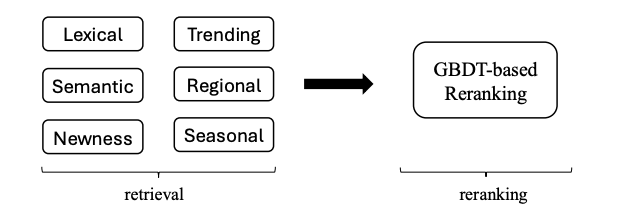
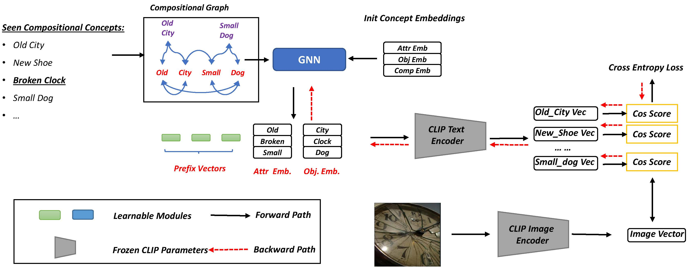
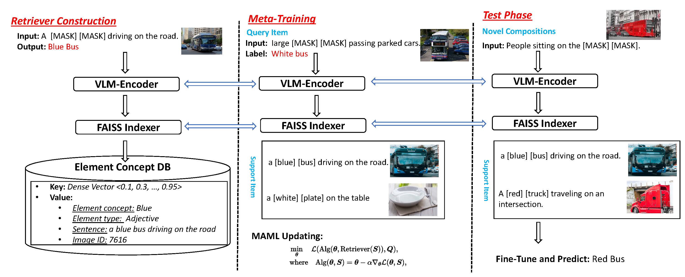
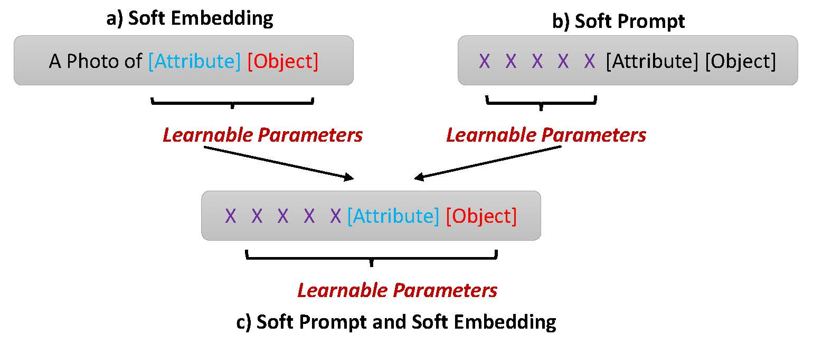

Guangyue Xu
I am currently a Senior Data Scientist at Search@Target. Previously, I pursued a Ph.D. at Michigan State University, where I focused on Machine Learning (ML) and Natural Language Processing (NLP). My research centers on pre-training large vision-language models and enhancing their generalization capabilities, with applications in e-commerce search.
I received my B.E. in Software Engineering from Jilin University and M.S. in Computer Science from Tsinghua University. I also interned in MSRA's Web Search and Mining Group.

We study unified text-image fusion for two-tower retrieval models in e-commerce, proposing a novel modality fusion network that captures cross-modal complementary information between product text and images.

A unified learning-to-rank framework that jointly optimizes ranking across multiple retrieval channels in large-scale e-commerce search, improving relevance and efficiency.

We introduce a GNN into soft-prompting design to improve CLIP's compositional zero-shot learning ability.

We meta-train vision-language models using retrieved items to obtain more generalizable token representations and improve compositional ability.

We systematically investigate various prompting techniques for CLIP in compositional zero-shot learning.